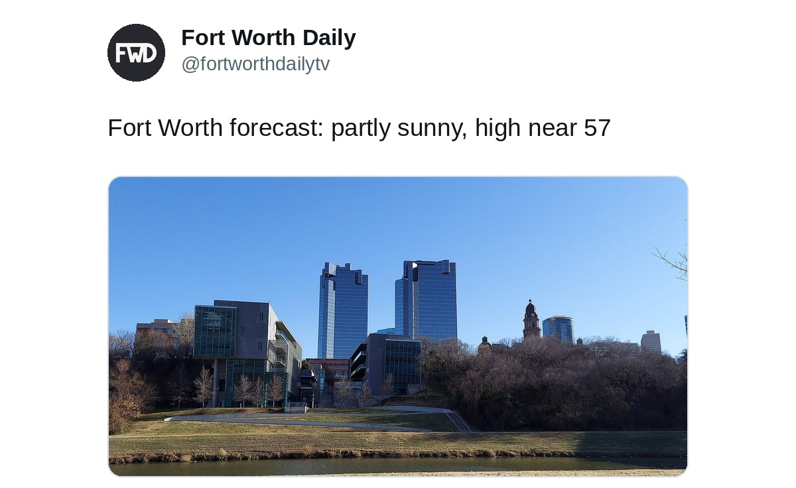

Partly sunny and a high of 57 in Fort Worth today. Partly cloudy, low near 38° tonight.

👍 ❤️ 😮 ✅ written to disk (dry run)
story + scoring
{
"source": "National Weather Service Fort Worth",
"kind": "nws_forecast",
"score": 1.95,
"relevance": 2,
"url": "https://forecast.weather.gov/MapClick.php?lat=32.7555&lon=-97.3308",
"image_license": "wikimedia-cc",
"image_credit": "Photo: DerekAyala27 via Wikimedia Commons (CC BY 4.0)"
}Two streets in Fair Park are now dedicated to two leaders from the African American Museum in Dallas: Dr. Harry Robinson Jr. and Richard Knight Jr.
👍 ❤️ 😮 ✅ written to disk (dry run)
story + scoring
{
"source": "CBS News Texas",
"kind": "rss",
"score": 0.7826,
"relevance": 2,
"url": "https://www.cbsnews.com/texas/video/fair-park-streets-dedicated-in-honor-of-2-leaders-from-african-american-museum-in-dallas/",
"image_license": "wikimedia-cc",
"image_credit": "Photo: Photo: Andreas Praefcke via Wikimedia Commons (CC BY 3.0)"
}WATCH: Salvation Army kicks off Thanksgiving campaign at AT&T Stadium
Video: WFAA on YouTube
🔗 Link post: Facebook will render the outlet's own preview photo
https://www.youtube.com/watch?v=2tVNIxzVUyc
👍 ❤️ 😮 ✅ written to disk (dry run)
story + scoring
{
"source": "WFAA",
"kind": "video",
"score": 0.7583,
"relevance": 3,
"url": "https://www.youtube.com/watch?v=2tVNIxzVUyc",
"image_license": null,
"image_credit": null
}